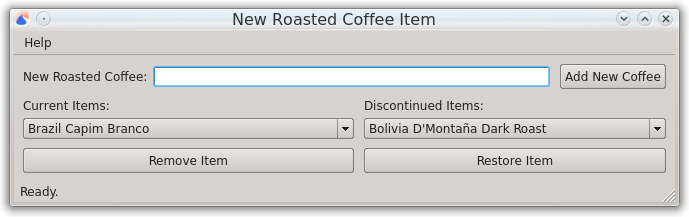

Manage Roasted Coffee Items
When using the New Batch window to roast coffee, there is a control to select which roasted coffee item you would like to roast. Manage Roasted Coffee Items allows you to control which items will appear in that list.
Field descriptions
New Roasted Coffee
If you want a completely new roasted coffee item, you can type the name of the item in this field, click Add New Coffee, and this will create a new roasted coffee item and add it to the Current Items list.
Current Items
This is a list of all of the items that will appear in the New Batch window. If you discontinue a roasted coffee item and would like that to no longer appear as an option in the New Batch window you can select the item and click Remove Item to move that item to the Discontinued Items list.
Discontinued Items
This is a list of roasted coffee items which are not in the Current Items list. If you have previously discontinued an item and would like to bring that back as an option in the New Batch window, you can select the item from this list and click Restore Item.